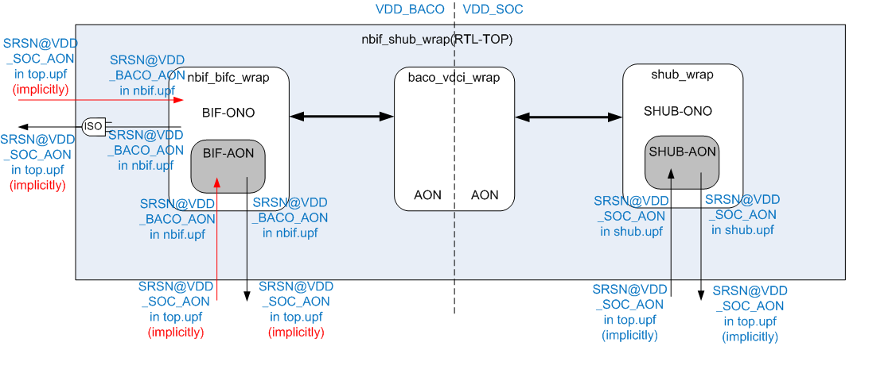

parent nodes: calendar_May_2016 | work_process-入职培训
work_process-DJ学习
目标: 自建component
CM getting started: reading note
重要概念: component, is a name scoped package, of 4 kinds of things:
1. set of IP
2. set of SoC
3. shared toolset
4. library of elements
重要概念: DJ, Distribute Job. 用Ruby写的flow工具, 用于evaluate and run flow.
帮助理解: Component Based WorkArea, 即cbwa, 基于组件的工作区, 大概是一种便于并
行开发的框架. 其最终实现有赖于DJ.
基本的目录结构: 工作目录, 即$STEM下有以下基本目录,
1.
album.dj:
关于Makefile:
rel://files/CM - Getting Started.docx
rel://files/Component Management - Details.pptx
Example: nbif (IP) component
nbif tree src: file:///D:/working/nbif2_0
tree build guide:
• build-tree
source /proj/verif_release_ro/cbwa_initscript/current/cbwa_init.csh
p4_mkwa -codeline nbif2_0
bootenv -v nbif_vg11_gpu 或者有可能是 nbif_nv10_gpu
p4w sync_all
• run a pg-case:
bootenv -v nbif_vg11_gpu
rm out -rf ; mdj_hds pg_nbif_generic_hst_sdp_more_apers_short_0 88888888
For NV10 last good CL, pls use 2362458
nbif结构图:

[alias: nbif]